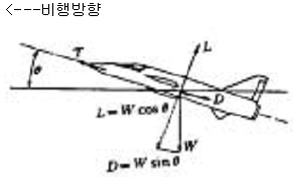
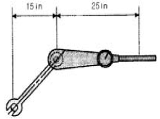
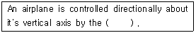

항공기체정비기능사 (2005-04-03 기출문제)
1과목: 비행원리
1. 절대압력(absolute pressure)을 가장 올바르게 설명한 것은?
- 표준대기상태에서 해면상의 대기압을 기준값 0으로하여 측정한 압력이다.
- 계기압력(gauge pressure)에 대기압을 더한 값과 같다.
- 계기압력으로부터 대기압을 뺀 값과 같다.
- 해당 고도에서의 대기압을 기준값 0으로 하여 측정한압력이다.
(정답률: 55%)

2. 비행기 상승률 "0"에 대한 등식으로 가장 올바른 것은?
- 여유마력 = 필요마력
- 여유마력 < 이용마력
- 이용마력 > 필요마력
- 이용마력 = 필요마력
(정답률: 63%)
3. 충격파를 지나온 공기에 일어나는 현상을 가장 올바르게 설명한 것은?
- 압력이 증가하고, 속도는 감소한다.
- 밀도는 감소하고, 속도가 증가한다.
- 압력이 감소하고, 속도가 증가한다.
- 압력과 속도가 감소한다.
(정답률: 67%)
4. 헬리콥터가 전진비행을 할 때 회전날개 깃에 발생하는 양력분포의 불균형을 해결할 수 있는 방법로 가장 올바른 내용은?
- 전진하는 깃의 피치각은 감소시키고 후퇴하는 깃의 피치각은 증가시킨다.
- 전진하는 깃의 피치각과 후퇴하는 피치각 모두를 증가시킨다.
- 전진하는 깃의 피치각과 후퇴하는 깃의 피치각 모두를 감소시킨다.
- 전진하는 깃의 피치각은 증가시키고 후퇴하는 깃의 피치각은 감소시킨다.
(정답률: 58%)
5. 비행기의 정적안정에 대해 가장 올바르게 설명한 것은?
- 비행기에 작용하는 모든 힘의 합이 0인 경우이다.
- 비행기가 등가속도로 비행하는 경우이다.
- 비행기에 작용하는 모든 모멘트의 합이 0인 경우이다
- 비행기가 돌풍을 받은후 진동을 하지 않고 원래 상태로 되돌아가는 경우이다.
(정답률: 57%)
6. 날개는 비행기의 가로 안정에서 가장 중요한 요소이다. 특히 기하학적으로 날개의 가로안정에 가장 중요한 요소는 어느 것인가?
- 쳐든각
- 승강키
- 수평안전판
- 도움날개
(정답률: 67%)
7. 그림은 등속도 비행하는 비행기에 작용하는 힘을 나타낸 것이다. 비행방향 즉 항공기의 진행방향에 대한 힘의 평형식으로 가장 올바른 것은?

- T = W cosθ + D
- T = W tanθ + D
- T = W sinθ + D
- L = W cosθ + Dsinθ
(정답률: 62%)
8. 날개 밑면에 접혀져 날개의 일부를 구성하고 있으나, 조작하면 앞쪽으로 꺾여 구부러지고 앞전 반지름을 크게 하여 효과를 얻는 장치는?
- 크루거 플랩(Kruger flap)
- 슬롯과 슬랫
- 드루프 앞전(drooped leading edge)
- 경계층 제어 장치
(정답률: 51%)
9. 비행기가 정상 수평선회시 경사각이 60°일때의 하중배수는 얼마인가?
- 1
- 2
- 3
- 4
(정답률: 69%)
10. 비행기의 이·착륙성능에서 거리의 관계를 가장 올바르게 표현한 것은?
- 지상활주거리= 이륙거리 x 상승거리
- 이륙거리= 지상활주거리 + 상승거리
- 상승거리= 지상활주거리 + 이륙거리
- 이륙거리= 지상활주거리 ⒠ 상승거리
(정답률: 76%)
11. 공기보다 가벼운 항공기 중 계류기구란 무엇인가?
- 바람이 부는데 따라 자유로 이동하는 것
- 지표면과 줄로 연결되어 한곳에 고정된 것
- 추진장치와 조종장치를 갖춘 비행선
- 가벼운 가스를 넣어 띄우는 연식비행선
(정답률: 57%)
12. 고 항력장치에 해당되지 않는 것은 어느 것인가?
- 스포일러
- 슬롯
- 역추진 장치
- 에어브레이크
(정답률: 75%)
13. 비행기의 속도가 음속 가까이로 증가하면 조종력에 역작용을 일으키는 현상을 무엇이라 하는가?
- 더치롤(Dutch roll)
- 턱언더(Tuck under)
- 피치업(Pitch up)
- 드래그 슈트(Drag chute)
(정답률: 60%)
14. 날개에 충격파를 지연시키고 고속시에 저항을 감소시킬 수 있으며, 음속으로 비행하는 제트 항공기에 가장 많이 사용되는 날개는?
- 직사각형 날개
- 타원날개
- 테이퍼 날개
- 뒤젖힘 날개
(정답률: 76%)
15. 토크(Torque)가 발생하지 않는 회전날개 헬리콥터는 어느것인가?
- 병렬식 회전날개 헬리콥터
- 직렬식 회전날개 헬리콥터
- 동축 역회전식 회전날개 헬리콥터
- 단일 회전날개 헬리콥터
(정답률: 61%)
16. 정비기술 도서 중 정비기술정보의 종류에 해당하는 것은?
- 전기배선도 교범
- 비행 교범
- 작동 교범
- 부품 교범
(정답률: 45%)
17. 볼트머리(Bolt head)에 R의 기호가 새겨졌다. 무엇을 의미하는가?
- 정밀공차 볼트
- 내식성 볼트
- 알루미늄합금 볼트
- 열처리 볼트
(정답률: 61%)
18. 보통 나무, 종이, 직물 및 각종 폐기물 등과 같이 가연성 물질에서 일어나는 화재는?
- A급 화재
- B급 화재
- C급 화재
- D급 화재
(정답률: 91%)
19. 고압가스취급 안전사항 중 산소취급시의 안전사항이 아닌 것은?
- 소화기를 비치한다.
- 옷에 묻었을 때 즉시 해독하고 제거해야 한다.
- 환기가 잘되도록 한다.
- 오일이나 그리이스와 혼합하면 폭발위험이 있으니 주의해야 한다.
(정답률: 78%)
20. 스터드나 볼트가 너트쪽으로 길게 나와 있는 곳에 사용하는 소켓의 명칭은 무엇인가?
- 프렉스소켓(flex socket)
- 유니버샬소켓(universal socket)
- 로킹소켓(locking socket)
- 디프소켓(deep socket)
(정답률: 63%)
2과목: 항공기정비
21. 블록 게이지(block gage)가 할 수 있는 작업 내용과 가장 거리가 먼 것은?
- 공구, 다이, 부품 등의 정밀도 측정
- 반지름이나 마멸량 측정
- 검사 계기의 측정
- 기계조립에서 제작중인 부품과 제작된 부품의 점검
(정답률: 43%)
22. 항공기 날개의 내부구조를 검사하는데 가장 적절한 비파괴 검사방법은?
- X-Ray 검사
- 초음파검사
- 형광침투검사
- 와전류검사
(정답률: 76%)
23. 토크 렌치와 연장 공구를 이용하여 볼트를 400 inㆍlb로 죄려고 한다. 토크 렌치와 연장 공구의 유효 길이는 각 각 25 in와 15 in이다. 토크 렌치의 지시값이 몇 inㆍlb를 지시할 때까지 죄면 되는가?

- 220 inㆍlb
- 230 inㆍlb
- 240 inㆍlb
- 250 inㆍlb
(정답률: 51%)
24. 항공기의 출발결정 사항으로 가장 올바른 것은?
- 기장과 운항관리사 및 정비확인자의 확인이 필요하다.
- 기장과 교통관제사 및 정비확인자의 확인이 필요하다.
- 기장과 항공기관사 및 정비확인자의 확인이 필요하다.
- 기장과 객실승무원 및 정비확인자의 확인이 필요하다.
(정답률: 57%)
25. 청력 상실 및 고막파열의 정도가 될 수 있는 소음한계는?
- 25 dB
- 80 dB
- 100 dB
- 150 dB
(정답률: 69%)
26. 항공기 견인시 주의해야할 사항 중 가장 올바른 것은?
- 야간에 견인할 때에는 전방등 및 항법등 외에도 필요한 조명장치를 하여야 한다.
- 견인차에는 견인 감독자가 탑승하여 항공기를 견인해야 한다.
- 지상감시자는 항공기 동체의 전방 10m 지점에 위치하여 견인이 끝날 때까지 감시해야 한다.
- 견인시 운전면허증을 갖고있는 사람이라면 누구나 견인 차량을 운전할 수 있다.
(정답률: 61%)
27. Which term means 0. 001 ampere?
- 1 Microampere
- 1 Kiloampere
- 1 Milliampere
- 1 Centiampere
(정답률: 66%)
28. 항공기의 다음비행 준비상태를 위한 기본점검 항목으로 볼수 없는 것은?
- 액체 및 기체류의 양이 적절한지 확인한다.
- 시한성부품(TRP)을 교환하고 확인한다.
- 비행 및 정비일지에 기록된 점검항목들의 수행 여부를 확인한다.
- 기관 흡입구에 외부 물질에 의한 손상(FOD)을 유발할 이물질이 없는지 확인한다.
(정답률: 70%)
29. 압력계기의 작동시험 장비의 명칭은?
- 다코웰 시험기
- 데드웨이트 시험기
- 그롤러 시험기
- 제티칼 시험기
(정답률: 60%)
30. 다음 ( )안에 알맞는 말은?

- rudder
- elevator
- ailerons
- flap
(정답률: 61%)
31. 정밀한 광학기계로써 특수한 형태의 망원경을 이용한 검사로 육안으로 직접 검사할 수 없는 곳의 결함발견에 이용되는 비파괴 검사법은?
- 코인 검사
- 와전류 검사
- 보어스코프 검사
- 침투탐상 검사
(정답률: 79%)
32. 항공기의 정시점검에 해당되는 것으로 가장 올바른 것은?
- 내부 구조검사
- 감항성 개선 지시에 의한 검사
- 정비개선 회보에 의한 검사
- 수리 및 개조
(정답률: 41%)
33. 항공기의 구성품 또는 부품의 고장으로 계통이 비정상적으로 작동하는 상태를 의미하는 것은?
- 결함
- 기능불량
- 수리요구
- 정비요구
(정답률: 47%)
34. 잭 작업 내용으로 틀린 것은?
- 단단하고 평평한 장소에서 최대 허용풍속 24km/h 이하에서 잭을 설치한다.
- 정해진 위치에 잭 패드를 부착하고 잭을 설치한다.
- 각 각의 잭에 장착된 램 고정 너트를 사용하면 갑작스러운 잭의 침하사고를 방지할 수 있다.
- 사용되는 로프나 체인의 위치는 안전에 중대한 사항이므로 정비 지침서에 의해서 작업을 수행한다.
(정답률: 31%)
35. 다음 리벳의 식별 방법을 설명한 것 중에서 가장 올바른 것은?
- 2047 : 리벳의 재질을 표시
- D : 리벳의 머리를 표시
- 6 : 리벳의 지름으로 6/32인치
- 16 : 리벳의 길이로 16/8인치
(정답률: 51%)
36. 천연고무의 단점을 개선하여 사용되는 인조고무의 종류가 아닌 것은?
- 부틸
- 부나
- 네오프렌
- 폴리에틸렌
(정답률: 62%)
37. 인장력과 압축력이 동시에 작용하는 모멘트는?
- 휨(bending)
- 전단(shear)
- 비틀림(torsion)
- 강도(strength)
(정답률: 47%)
38. 항공기 타이어의 숄더(Shoulder)부위에서 지나치게 마모가 나타나는 경우로 가장 올바른 것은?
- 과도한 팽창
- 한계이상의 토인(Toe-in)
- 부족한 팽창
- 택싱에서의 빠른회전
(정답률: 48%)
39. 재료가 열을 받아도 늘어나지 못하게 양끝이 구속되어 있다면 재료 내부에서는 응력이 발생하게 되는데, 이 때의 응력은?
- 순수전단응력
- 막응력
- 후크응력
- 열응력
(정답률: 52%)
40. 합금강의 분류에서 SAE 1025에 대한 설명 내용으로 가장 올바른 것은?
- 탄소강을 나타낸다.
- 니켈강을 나타낸다.
- 합금원소는 크롬이다.
- 탄소의 함유량은 5%이다.
(정답률: 64%)
3과목: 항공기체
41. 랜딩기어시스템(landing gear system)에서 트라이 사이클 기어(tricycle gear) 배열의 장점이 아닌 것은?
- 빠른 착륙속도에서 강한 브레이크(Brake)를 사용할 수 있다.
- 이륙이나 착륙 중 조종사에게 좋은 시야를 제공한다.
- 항공기의 그라운드 루핑(ground looping)을 방지한다.
- 이륙, 착륙 중에 테일 휠(tail wheel)의 진동을 막는다.
(정답률: 43%)
42. 헬리콥터의 테일붐에 대한 설명 내용으로 가장 거리가 먼 것은?
- 이 구조는 알루미늄합금과 마그네슘합금으로 만들어 진다.
- 꼬리회전날개의 구동축은 테일붐 위쪽에 베어링으로 장착되어 덮개로 보호해 주고 있다.
- 안정판은 수평안정판과 수직안정판으로 구성되며 허니콤으로 되어 있다.
- 수평안정판은 테일붐 좌·우측에 각 각 따로 설치한다.
(정답률: 60%)
43. 청동을 나타낸 것은?
- 구리 + 아연
- 구리 + 주석
- 구리 + 알루미늄
- 구리 + 망간
(정답률: 76%)
44. 정사각 막대에 8ton의 하중이 걸렸다. 재료의 허용응력을 450㎏/㎝2이라고 할 때, 이 하중에 견디기 위한 한변의 길이는 몇 ㎝ 인가?
- 1. 22
- 2. 22
- 3. 22
- 4. 22
(정답률: 34%)
45. 기둥의 좌굴(Buckling)현상에 대한 설명 중 가장 거리가 먼 내용은?
- 축 방향으로 압축력을 받는 부재에서 주로 발생한다.
- 단면에 비하여 길이가 비교적 짧은 부재에서 주로 발생한다.
- 좌굴응력은 재료의 압축강도보다 훨씬 작은 값이다.
- 세장비(Slenderness ratio)가 큰 기둥에서 주로 발생한다.
(정답률: 50%)
46. 브레이크(BRAKE)의 기능 중에서 비상 및 보조 브레이크 장치에 관한 설명 내용으로 가장 올바른 것은?
- 정상 브레이크(BRAKE)와 같이 사용된다.
- 파킹 브레이크(PARKING BRAKE)와 같이 사용된다.
- 주 브레이크와는 별도의 장치로 되어있다.
- 러더(RUDDER) 조종용 페달(PEDAL)과 같이 부착한 부 페달로 작동한다.
(정답률: 52%)
47. 지름이 5㎝인 원형 단면인 봉에 8,000 N 의 인장하중이 작용시, 단면에 작용하는 응력을 구하면 약 얼마인가?
- 401(N/㎝2)
- 4⑤(N/㎝2)
- 403(N/㎝2)
- 407(N/㎝2)
(정답률: 32%)
48. 마그네슘과 그 합금에 대한 설명 내용 중 가장 올바른 것은?
- 냉간가공이 가능하다.
- 순수 마그네슘 가루는 공기 중에서 발화된다.
- 염분에 부식이 않된다.
- 알루미늄보다 비중이 크다.
(정답률: 42%)
49. 착륙 장치의 완충 스트럿에 압축 공기를 공급할 때, 공기 대신 공급할 수 있는 것은?
- 수소
- 질소
- 산소
- 아세틸렌 가스
(정답률: 69%)
50. 단일 회전날개 헬리콥터에서 연료탱크(TANK)는 대부분 어느 곳에 위치하는가?
- 테일붐(TAIL BOOM)
- 파일론(PYLON)
- 동체(FUSELAGE)
- 날개(WING)
(정답률: 70%)
51. 항공기에서 2차 조종계통에 속하는 조종면은?
- 도움날개(Aileron)
- 방향키(Rudder)
- 슬랫(Slat)
- 승강키(Elevator)
(정답률: 79%)
52. 회전날개에서 양력과 원심력의 합력에 의해 깃의 위치가 정해지는 현상은 무엇인가?
- 드롭(droop)
- 코닝(coning)
- 브레이드팁(blade tip)
- 슬라이딩(sliding)
(정답률: 65%)
53. 꼬리날개(Empennage)의 구성 요소가 아닌 것은?
- Vertical Stabilizer
- Horizontal Stabilizer
- Elevator
- Spoiler
(정답률: 73%)
54. 힘(force)은 벡터양으로 표시되는데 다음 중에서 가장 관계가 먼 것은?
- 속도
- 크기
- 방향
- 작용점
(정답률: 48%)
55. 항공기의 자기무게를 계산하기 위하여 필요한 것은 어느것인가?
- 사용가능의 연료 무게
- 사용불능의 연료 무게
- 배출가능 윤활유 무게
- 유상하중
(정답률: 30%)
56. 하중의 일부만을 skin이 담당하는 동체구조로 세로대(Longeron)와 가로대(Frame)로 구성되어 있는 구조부재 형식은?
- 트러스구조
- 모노코크구조
- 세미모노코크구조
- Honeycomb구조
(정답률: 57%)
57. 케블러(Kevlar)라 불리우는 섬유형 강화재는?
- 아라미드 섬유
- 알루미나 섬유
- 보론 섬유
- 탄소 섬유
(정답률: 56%)
58. 헬리콥터 동체의 구조형식인 모노코크형 구조에 속하지 않는 부재는?
- 링
- 정형재
- 벌크헤드
- 세로대
(정답률: 46%)
59. 미국규격협회(ASTM)에서 알루미늄 합금의 냉간가공 상태, 열처리 상태를 표기하는 식별기호에 관한 설명으로 가장 올바른 것은?
- F : 풀림 처리를 한 것
- O : 담금질후 시효경화가 진행중인 것
- H : 가공 경화한 것
- W : 주조한 그대로의 상태의 것
(정답률: 56%)
60. 헬리콥터의 스키드 기어형 착륙장치에서 스키드 슈(skid shoe)의 사용 목적을 가장 올바르게 표현한 것은?
- 휠(Wheel)을 스키드에 장착할 수 있게 하기 위해
- 회전날개의 진동을 줄이기 위해
- 스키드가 지상에 정확히 닿게 하기 위해
- 스키드의 부식과 손상의 방지를 위해
(정답률: 74%)